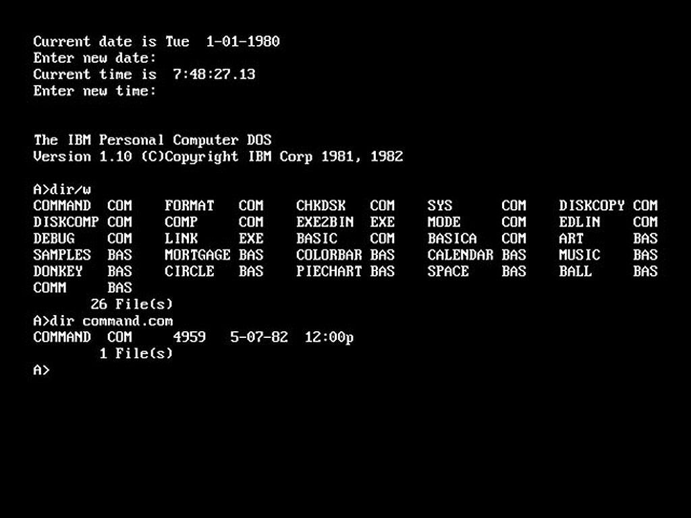
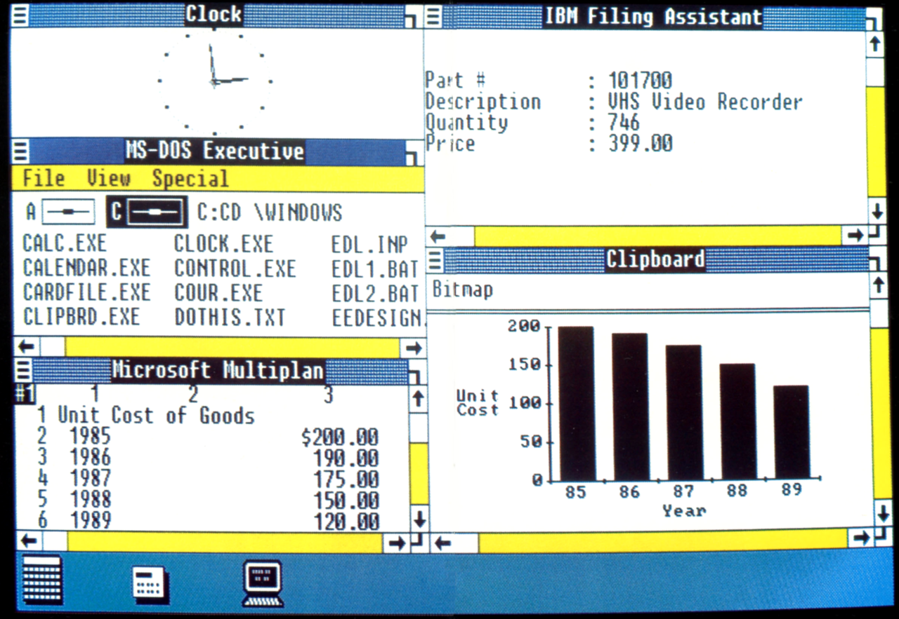
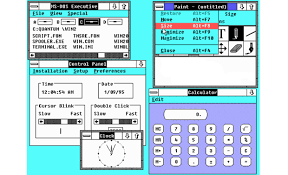
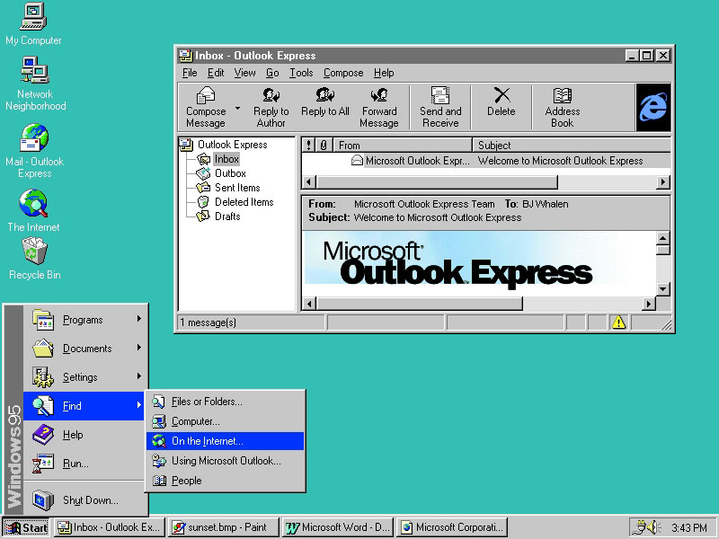
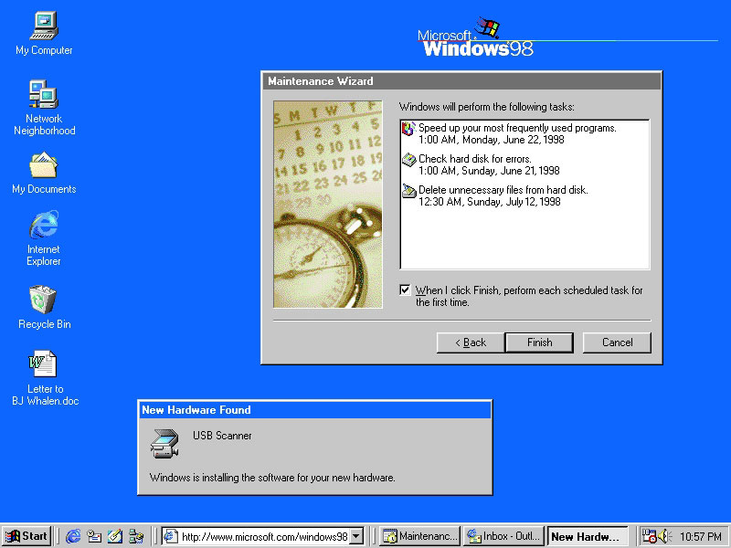
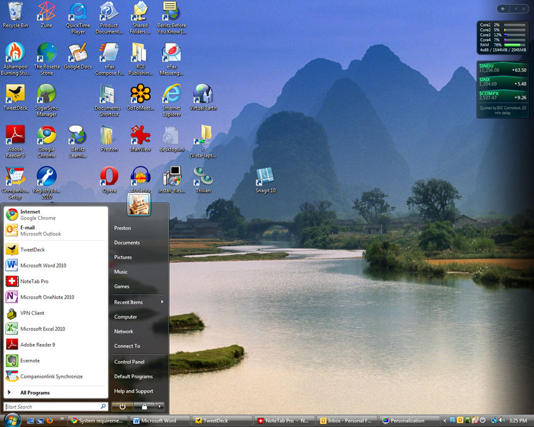
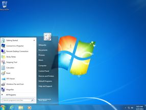
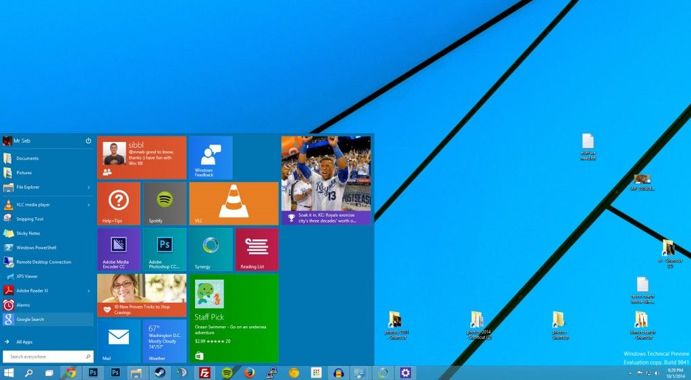

Système d'exploitation : définition, traduction et acteurs
Un système d'exploitation, ou OS pour Operating System, définit un ensemble de programmes chargé d'établir une relation entre les différentes ressources matérielles, les applications et l'utilisateur. Dans un ordinateur, le système d'exploitation a plusieurs missions. Il gère, entre autres, le processeur et la mémoire vive, optimise l'exécution des applications en leur attribuant les ressources nécessaires, fournit un certain nombre d'informations sur le bon fonctionnement de l'ordinateur, etc. Il permet l'utilisation de périphériques dans les meilleures conditions et protège l'accès aux ressources. Un système d'exploitation se compose la plupart du temps d'un noyau (kernel en anglais), d'un interpréteur de commande (shell en anglais) et d'un système de fichiers (file system en anglais). Au début des années '80, Microsoft a introduit les fenêtres avec "Windows", qui veut justement dire "fenêtres" en anglais. Parmi les systèmes d'exploitation les plus répandus aujourd'hui dans le monde, on peut citer Mac OS d'Apple, Windows de Microsoft, ou encore Android pour les téléphones mobiles et les smartphones.
Système d'exploitation : les acteurs
Linux, Apple (avec iOS, TvOS, MacOS...), Microsoft (Windows) et Google (Android)... L'acteur majeur des systèmes d'exploitation est Microsoft Windows. Nous vons détailleons ici son évolution au fil des années.
MS-DOS
L’histoire de Windows est indissociable de celle de MS-DOS. Elle raconte comment une opportunité a changé le cours de l’industrie informatique personnelle, alors balbutiante. IBM, qui souhaite lancer en 1980 son premier PC, préfère acheter un système existant plutôt que de développer le sien.
Windows 1.0
À sa sortie en novembre 1985 – et pendant une décennie –, Windows n’est pas un OS. Il s’agit d’une interface graphique pour MS-DOS visant à aider les utilisateurs à réaliser plus rapidement des opérations grâce à une souris. On retrouve bien sûr le système de fenêtres qui a donné son nom au produit, ainsi que quelques outils de base, désormais célèbres, comme Paint. Windows 1.0 comporte cependant une longue liste de limitations. Il hérite notamment de toutes les barrières imposées par MS-DOS, dont le fonctionnement monotâche. Certaines capacités d’interface sont également bridées pour respecter les termes d’un accord conclu avec Apple qui possède déjà à cette époque d’importants brevets dans ce domaine (basés sur des idées récupérées chez Xerox). Peu performant et ne proposant rien de plus que les produits existants, trop limité, le succès de Windows 1.0 ne sera qu’anecdotique. Il réclame au minimum 256 Ko de mémoire, mais 512 Ko et un disque dur sont recommandés.
Windows 2.0
Lorsque débarque la version 2.0 deux années plus tard, une partie des barrières a disparu. Les fenêtres peuvent se chevaucher (créant la toute première tension avec Apple) et le multitâche fait son entrée, bien qu’en mode coopératif, potentiellement instable.
Windows 3.0/3.1
Windows 3.0, apparu en mai 1990, marque une rupture. Il devient évident que le produit est amené à jouer un grand rôle, l’interface graphique y étant prépondérante. Techniquement, Windows 3.0 reprend le mode protégé de la mouture 2.1, mais avec un adressage étendu sur 32 bits, permettant de gérer jusqu’à 4 Go de mémoire.

Windows 95
Avec cette version, Windows a franchi un grand pas vers le Windows d’aujourd’hui. En effet, le bureau, la barre des tâches ou encore le menu « démarrer » font leur apparition. Le design s’affine également beaucoup.
Windows 98
Il s’agit en quelque sorte d’une grosse mise à jour de Windows 95. Internet fait son apparition. Le design évolue très peu entre ces deux versions.
Windows Vista
Il aura fallu plus de six ans pour développer ce nouvel OS. A l’arrivée, le système Aéro ralenti la machine et de nombreuses incompatibilités matérielles avec XP le rende peu stable. D’un point de vue graphique, la transparence fait son apparition.
Windows 7
Cette version est un Vista allégé pour compenser les lenteurs de la précédente version. Il est plus rapide et fonctionne bien. Graphiquement, pas d’évolution flagrante.
Windows 8
Cette version amène le système de « tuiles » présent sur les versions mobiles (smartphone et tablette). Le bouton et le menu « démarrer » disparaissent. Le changement est trop brutal et pas adapté à la pratique de PC de bureau. Microsoft remettra le bouton et le menu démarrer un an plus tard.

Windows 10
Il s’agit du dernier système d’exploitation en date. Il a tenté de garder le meilleur des versions 7 et 8. Graphiquement, il est au goût du jour avec une interface plus minimaliste (flat design).
